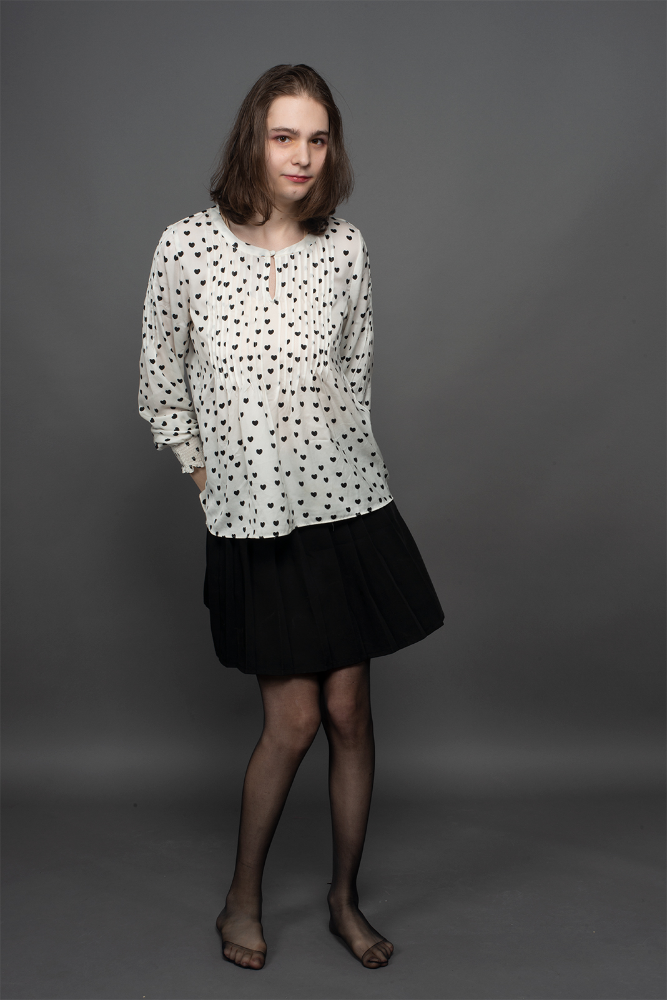
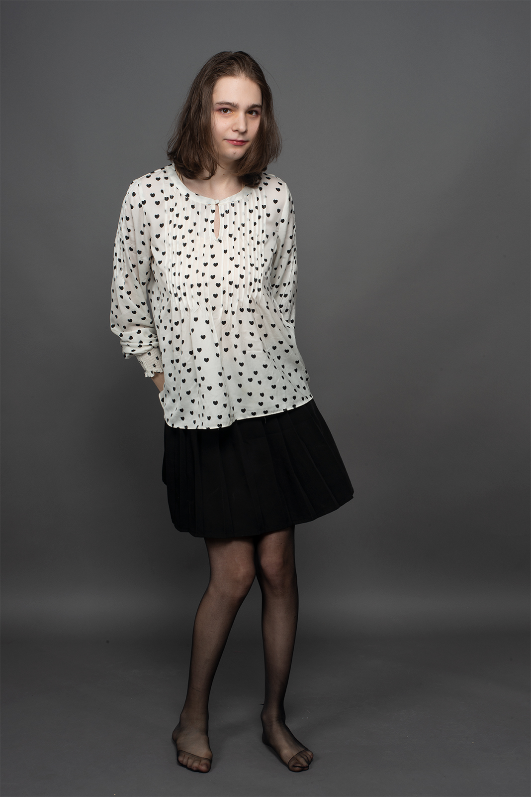
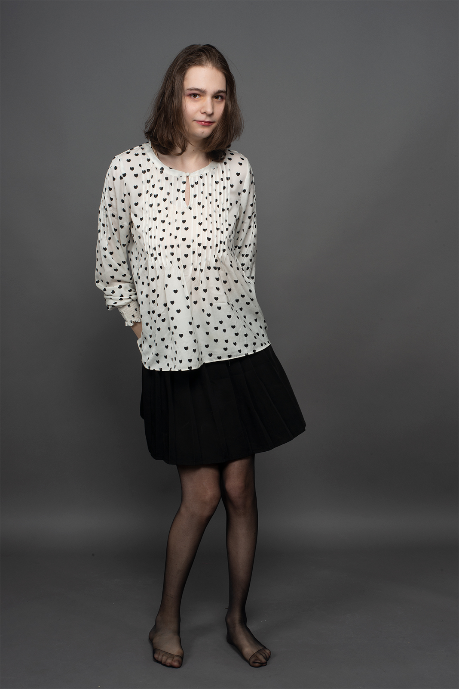
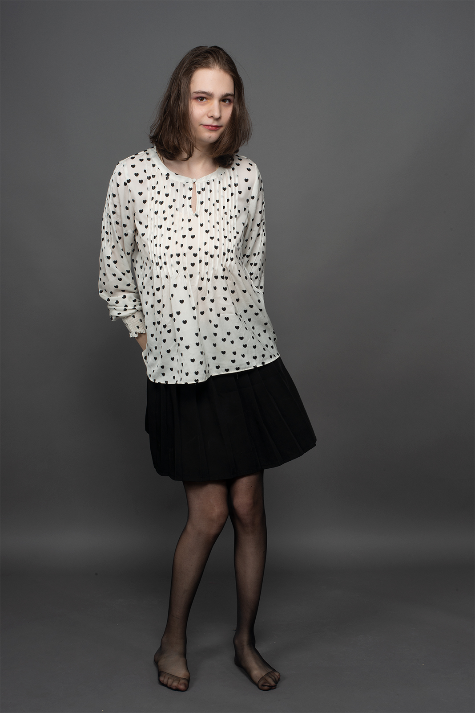

biography
Born in Westford, MA, Hunter Hryckowian (he, him, his) focuses his work on the exploration of his own femininity. He is inspired by the work of photographers who make images of male femininity and vulnerability such as Lissa Rivera. His current work features a series of self portraits exploring his feminie self with images taken in his living space and a studio space.
interview
Hunter Hryckowian in conversation with Yuehan Gao
YG: What drewdrew you to photography instead of other forms of art?
HH: When I was younger I always saw photography as a form of truth. I saw it as a form of indisputable truism.
YG: Your body of work is foremost constituted from self-portraits.. What do self-portraits signify to you? They seem to have an important role within the work you made because it feels like they are helping you position yourself.
HH: For me the self portraits are a way of coming out, a way of showing the world who I am and who I want to be. They depict an idealized version of myself.
YG: What camera do you use?
HH: I use a Nikon D800E, usually with a sigma 35mm or my NIKKOR 50mmm lens. I also occasionally use Dynalite strobes.
YG: What photographic processes do you like to use and why?
HH: I really enjoy using digital. I like the flexibility it offers and I appreciate that it's forgiving. I am an avid user of Photoshop so I enjoy being able to use digital files to really get in the pixels and shape them the way I want.
YG: What is the difference between taking pictures at home versus working in a studio?
HH: Often at home I feel like I need to be true to who I really am, but in the studio I feel free to try to explore new creative avenues.
YG: Can you talk about your shooting process, such as lighting or setting, etc.? Did you encounter any problems while you were making your photos?
HH: I often try to brainstorm ideas for images before I shoot, writing them down in a notebook and sometimes making a sort of sketch image with my phone to go along with it. When it comes to lighting I often run into issues. I enjoy using strobes for their ability to freeze time, but that often comes at the expense of losing a sense of realism. In those cases where I want to keep that sense of realism I like to use as much natural lighting as I can.
YG: Can you talk about how you see the feminine side in you?
HH: Sure, I often think of myself as very feminine. I enjoy things that have been marked by society as female, such as painting nails, wearing dresses, skirts, and panties. While being confident in my male identity I often enjoy female things.
YG: What is your philosophy about femininity?
HH: I don't think femininity should be confined to only women, I feel that femininity and masculinity should be acceptable for everyone, no matter their gender identity.
YG: Whose work do you admire? Who were you influenced by?
HH: I really admire Lissa Rivera. Her beautiful boy series was the first work I’ve seen that really resonated with me. Seeing someone with the courage to dress in women’s clothes and be the center of a body of work really inspired me to do the same.
YG: How do you expect viewers will react to your work ideally?
HH: I’m really not sure. I hope they appreciate it and understand it, but I’m not sure how they will react. I want them to understand why I made it, and why it’s important for me to make it.